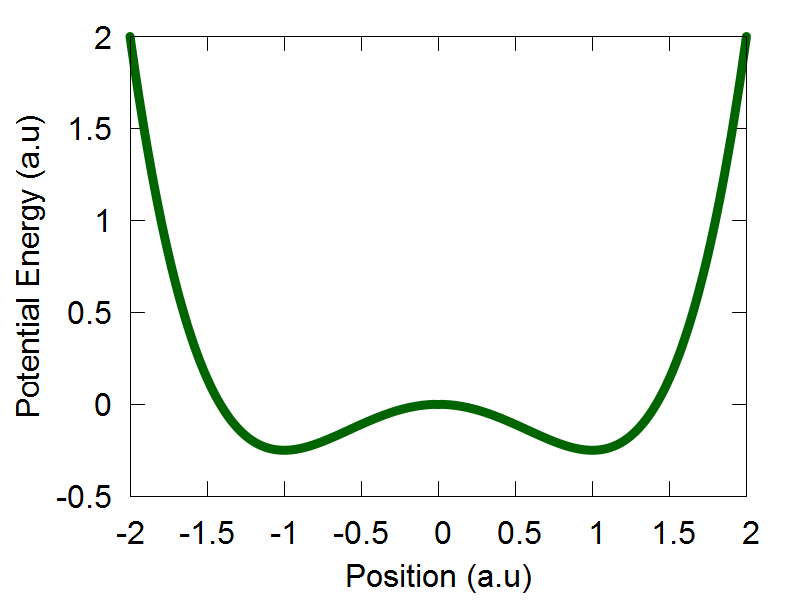

Nuclear Dynamics
Authored by Brendan A. Smith, Alexey V. Akimov
General Workflow of Nuclear Dynamics Module
The working files for all examples presented in this tutorial can be found: here The general workflow for all nuclear dynamics testing scripts is the following:- The user will begin by defing how many electronic dof, nuclear dof, and number of trajectories they wish to use in their simulation.
- The user sets up model specific parameters, such as the force constant for a harmonic potential, etc. An important parameter here is the selection of which model the user would like to use. For example, setting params["model"] = 1, may select a harmonic potetnial, etc. The integration time step, dt is also set by the user here.
- The user now initilizes the dynamical variables q, and p. They are of type MATRIX, and are of dimensions (ndof x ntraj). Currently, the variables p and q are set by sampling from a normal distribution, via the sample() function.
- The hamiltonian object, ham, which stores all of the essential simulation details, such as the potential energy and forces, in various represetnations, diabatic, adiabtic, etc., needs to now be updated based on the dynamical variables initiated by the user. This is done by making the following function calls: ham.compute_diabatic(), ham.compute_adiabatic().
- The simulation can now begin by calling the function run_test().
Verlet Dynamics
Example 1 - Classcial propagation of a single nuclear dof in 1D.
Classical nuclear propagation in Libra is done using the Velocity Verlet algorithm. The file we will be using in this section of the tutorial can be found here. In this example, we will be using the Velocity Verlet algorithm to perform dynamcs for a singular nuclear degree of freedom (dof) in a harmonic potential. The espression for the potential is: $$ V(q) = \frac {k}{2}q^2 $$ Where k is the harmonic force constant, and q represents our single nuclear dof.
Following the general workflow outlined in the tutorial introduction, we will begin by setting ndia, nadi, nnucl, and ntraj equal to 1. In this script, we will be passing the variable model as a parameter in our run_test() function. Setting model = 1 will set the potential energy to be the harmonic potential. For this model, we will also need to initiate various other parameters. The following parameters to be set are:
params["x0"] = 1.0, params["k"] = 0.1, params["D"] = -0.1, params["omega"] = 0.25
Since we will be propagating only a single nuclear degree of freedom, please set the last parameter in the following functions equal to zero. ham.compute_diabatic(), and ham.compute_adiabatic().
Now, we are ready to run the simulation, which can be run by executing the following command: python test_verlet.py. After the code has finished running, you can plot the output file by executing the following command: gnuplot test_verlet.plt

a
b
c
d
Example 2 - Classcial propagation of a single nuclear dof represented as an ensemble of trajectories.
We are now ready represent our single nuclear degree of freedom as an ensemble of trajectories. We will begin this section of the tutorial by opening the following script: test_verlet_ens.py, which can be found here. Like Example 1, we will keep the varibles ndia, nadi, and nnucl set equal to 1. However, the variable ntraj will now be set equal to 50. This means that our single nuclear degree of freedom will now be represented as an ensemble of 50 trajectories.
The next block of code sets up the "Heirachy of Hamiltonians", which serves as an effiecnt way to handle the dynamical infromation that accompanies simulations consisting of `N` trajecotires. For more information, please familairize yourself with Libra's nHamiltonian Class.
The dynamical variables q, and p, will now be set. They are of type MATRIX, and are of dimensions (ndof x ntraj). The variable, model, has not changed from Example 1. We can forge ahead to the next section of the code.
We should now encounter a new function: sample(q, mean_q, sigma_q, rnd). In this script, sample() is actually defined within the script, and is located above the function run_test(). This function populates the dynamical variables q and p via sampling from a normal distribution. Another change the user should see in this script relative to the last is the mass is now in the form of Libra's VECTOR data type. Each nucler degree of freedom gets assigned a mass value. In addition to this, the user should also notice that the last argument of the functions: ham.compute_diabatic(), and ham.compute_adiabatic(), are now set equal to 1, which is necessary when running multiple trajectory simulations in Libra.
The last major change needed is the swapping of the Verlet0() function from Example 1, for the Verlet1() function, which is designed to support Libra's multiple trajectory functionality. The extra code following the Verlet1() function call is needed for data analysis purposes only, and does not affect the dynamics. We are now ready to run the simulation. Please save and exit your script, and run the program by executing the following command: python test_verlet_ens.py. After the simulation has finished, you can plot the output files by executing the following command: gnuplot test_verlet_ens.plt. You should obtain the following results.
a
b
c
Entangled Trajectories Hamiltonian Dynamics
Theory and implimentation
This section of the tutorial shows how to utilize the Entangled Trajectories Hamiltonian Dynamics (ETHD) algorithm to perform nuclear dynamics with quantum effects in real time. It highlights the comparison between the dynamics of ETHD and classical equations of motion.
The paper for the ETHD methodolgy can be found using the following reference:
Smith, B. A.; Akimov, A. V. Entangled Trajectories Hamiltonian Dynamics for Treating Quantum Nuclear Effects. J. Chem. Phys. 148, 144106 (2018)
The method is implemented
here. The ETHD Hamiltonian is defined as follows:
$$ H_{ETHD} = \frac{1}{N} \sum_{i=1}^N \frac{p_i^2}{2m} + \frac{1}{N} \sum_{i=1}^N V(q_i) + \frac{\hbar^2}{8ms^2({q})}$$
Where `N` represents the number of trajectories in a given simulation, `p_i` being the momenta of trajectory i, `q_i` being the position
of trajectory i, and `s^2(q)`, being the variance of the trajectory ensemble, expressed in terms fo the position corrdinates of all
traejctories, in a non-seperable way. Specfically, `s^2(q)` is defined as:
$$ s^2({q}) = \frac{1}{N} \sum_{i=1}^N (q_i - q_{avg})^2 $$
To remind you of the general workflow for the nuclear dynamics module, and to mention new features present in the workflows of
scripts for nuclear dynamics with ETHD, let's recapitulate the general work flow:
- The user will begin by defing how many electronic dof, nuclear dof, and number of trajectories they wish to use in their simulation. It is reccomeneded that no less than 100 trajectoies be used for a given ETHD simulation.
- Following this, the user will set up model specific parameters, such as the force constant for a harmonic potential, etc. An important parameter here is the selection of which model you would like to use. For example, setting params["model"] = 1, may select a harmonic potetnial, etc. The integration time step, dt is also set by the user here.
- The dynamical variables q, and p, will now be set. They are of type MATRIX, and are of dimensions (ndof x ntraj). Currently, the variables p and q are set by sampling from a normal distribution, via sample() function.
- The hamiltonian object, ham, which stores all of the essential simulation details, such as the potential energy and forces, in various represetnations, diabatic, adiaabtic, etc., needs to now be updated based on the dynamical variables we have previously defined. We will do this by making the following function calls: ham.compute_diabatic(compute_model, q, params, 1), ham.compute_adiabatic(1, 1), and if we wish to include the changes in energy that arise due to ETHD coupling term, we call: ham.add_ethd_adi(q, iM, 1)
- We will now propagate our trajectory ensemble, by calling the following function: Verlet1(dt, q, p, iM, ham, compute_model, params, 1). The last parameter passed into the function is the option to choose between Classcial - 0, and ETHD dynamics - 1.
Example 1: 1D tunneling in the symmetric double well potential.
Please begin by opening the following file: /libra-code/tests/example_9_nuclear_dynamics/test_ethd.py, which can also be found here.
The workflow just defined serves as a skeleton for the various ETHD implimentations in Libra. In the following examples, any additional features of a particular simulation will occur in between any of the bulleted points above. For example, binning functions are often called in the 2D testing scripts which print distributions for the dyanamical variables of the trajectory ensemble, and occur between bullets number 3 and 4, which bullet 3 is the initilization of such variables.
The potential energy function for the 1D symmetric double well potential is: $$V(q) = \frac{q^4}{4} - \frac {q^2}{2}$$ The potential energy profile over the position coordinate interval [-2:2] is shown in Figure 1. In this tutorial, we will run the function run_test2(). Since we will be propagating nuclear dof on only one electronic potential energy surface, we will set the variables ndia and nadi to be equal to 1. Given that this is a 1D example, we will also ste the variable nnucl equal to 1. That is, we are going to propagate only 1 nuclear dof. We will represent this single nuclear dof with 100 trajectories by setting the variable ntraj equal to 100.
We select "model":2 to choose the 1D symmetric double well potential, as is defined in the model2() function of the code. The 1D symmetric double well potential has two local minima, one located at q = -1.0 (a.u) and another at q = 1.0 (a.u). In the original ETHD paper, we initiated out trajectory ensemble slightly displaced from the leftmost local minima. Therefore, if not done already, please set the following variable: mean_q.set(0,0, -1.1). This sets the average position of our trajectory ensemble to be located at q = -1.0 (a.u) The idea behind this simulation was to highlight a case where an initial trajectory ensemble, whose physics is governed by a classcial Hamiltonian, will not tunnel to the adjacent well. This was realized by selecting a small distribution uncertainty for the initial trajectory ensemble, so if not done already, please set sigma_q.set(0,0, 0.04). Initial mean momenta and its variance are set equal to 0.
After initiaing the dynamical variables q and p, please uncomment the function sample(q, mean_q, sigma_q, rnd), as this tutorial will already provide you with an ensemble distribution for the position coordinates. The code will now automatically assemble these position coordinates into the dynamical variable q, which you just defined. Following this, the mass variable is ititilized, and we are ready to do dynaimcs! If you would like to run dynamics using the ETHD algorithm, please make sure that the line "ham.add_ethd_adi(q, iM, 1)" is uncommented, and that the last argument in the fucniton "Verlet1(dt, q, p, iM, ham, compute_model, params, 1)" is set equal to 1. To run dynamics using the classcial Hamiltonian, make sure to comment out "ham.add_ethd_adi(q, iM, 1)", and that the last argument in the Verlet1() fucntion is set equal to zero.
To run the calculations, please scroll down to the bottom of the page, and make sure the following function call is ready: run_test2(). If it is, please save the script, exit, and executing the following command: "python test_ethd.py". After the code has finished running, you can view plot your results by executing the following command: gnuplot test_ethd_1D.plt.

a
b
c
d


e
f
g
h